CXL SSD-通过CXL扩展内存
[toc]
CXL Type3 devices have various types，such as DRAM based，SSD based。We focus on SSD based CXL Type3 devices in this artical.
具体类型可以通过DVSEC 0 中的range size low 寄存器的bit4:2 知道。
• 000b = Volatile memory. This setting is deprecated starting with the CXL 2.0 specification.
• 001b = Non-volatile memory. This setting is deprecated starting with the CXL 2.0 specification.
• 010b = Memory characteristics are communicated via CDAT (see Section 8.1.11) and not via this field.
发展
NAND FLASH是个好东西
同样一个DRAM Chip(bank) 和 NAND FLASH Chip(bank) ，面积一样的情况下FLASH可以提供16倍的存储空间。同时，NAND FLASH CHIP 每GB 的价格比DRAM 要低很多，同样的价格可以买到DRAM 50多倍的FLASH容量。
而且NAND FLASH 非易失。
因此，NAND FLASH 是个好东西。把NAND FLASH拿来当memory是个很好的路子。
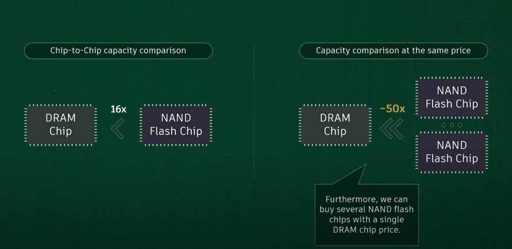
基于PCIe BAR的MMIO不太好用
想要当memory用，你肯定得能cache，要不那也太费劲了。每一笔数据都到存储颗粒中取，latency直接起飞。
NAND FLASH是分块的，所以在SSD控制器那里还得把block属性屏蔽掉，让它能按照字节访问。这个还好，在SSD controller中做就好了，毕竟SSD controller就是个小型的SoC。
把SSD controller中的DRAM 通过BAR暴露出来，load store 就可以用了，显存就是这样搞的。
但是BAR的设计初衷就是MMIO，是沟通的渠道。连接的CPU和device 侧的DRAM，不能cache的，在x86 架构下面， MMIO 的页表映射的虚拟地址在页表上都会有Uncacheable 的属性。
为什么不能缓存呢？MMIO这个地址，现在是A数据，过一会设备给更新为B数据了，也没有机制通知CPU，你缓存的东西invalid了，CPU也不知道自己缓存的东西有没有变化。因此，CPU 缓存没有意义。
缓存禁止：为了避免上述问题，x86 架构通常会将 MMIO 区域标记为不可缓存（uncacheable）。这意味着当 CPU 访问这些内存区域时，会绕过缓存，直接从主内存或外设读取数据或将数据写入外设。
MTRR（Memory Type Range Registers）和 PAT（Page Attribute Table）：x86 架构中有 MTRR 和 PAT 机制，允许操作系统或固件指定某些内存区域的缓存属性，包括将某些区域标记为不可缓存。
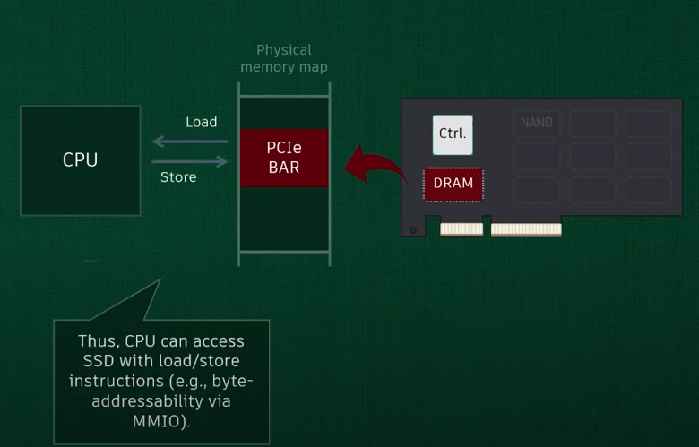
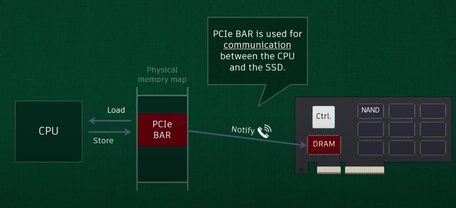
基于上述的背景，CXL 标准出现后，可以把EP侧的DRAM 设置为cache-able了。能cache了，那当memory用就有可能了。
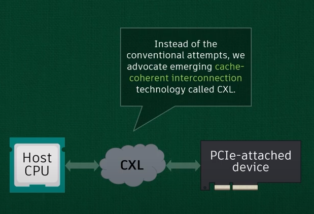
CXL 登场助力SSD
cxl.memory 不做cache coherence ,但是他和PCIE 的区别就是，CXL协议支持CXL device map到CPU 的cache able system memory 空间。
简单的讲，这个CXL.mem 支持的 CXL SSD 在CXL spec 中把这个在CPU 的物理地址空间中memory map的部分叫做HDM （host-managed device memory ) 相比 DDR叫做 Host attached Memory .
相比MMIO， HDM能cache，因此不用每个byte都去颗粒中读取，只有cache misdd才需要。
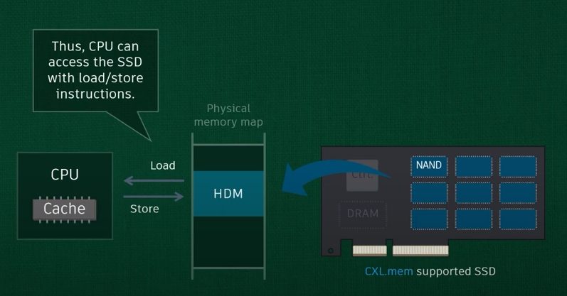
所有的NAND都可以映射到HDM，容量自由了，latency在cache协助下，也可接受了。
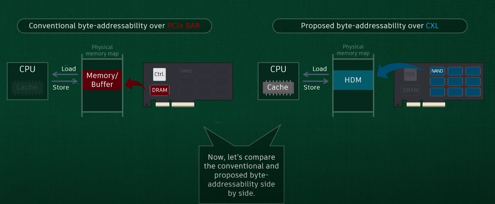
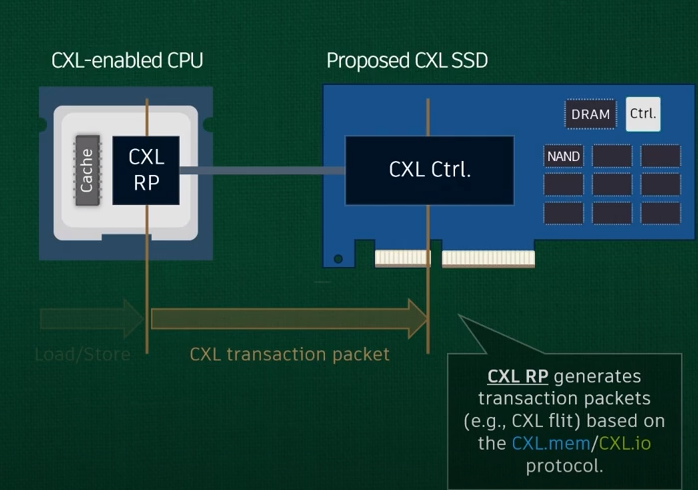
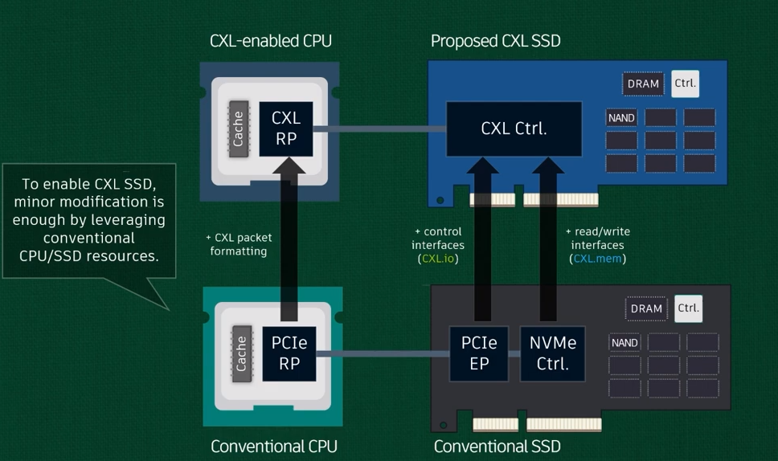
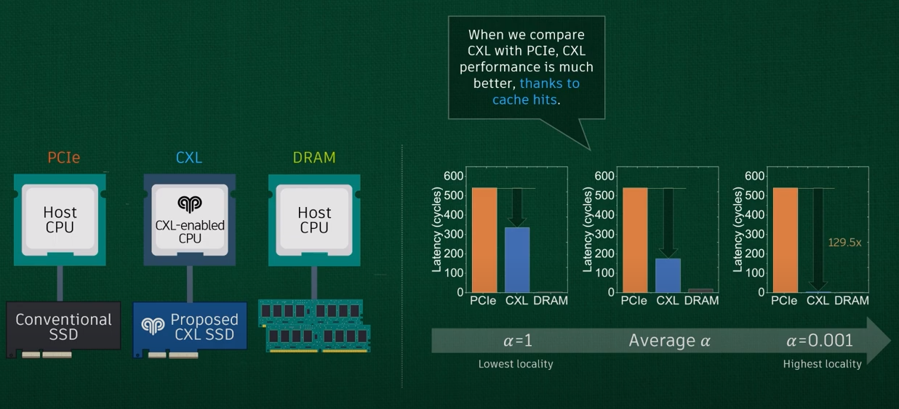
三张图分别表示最好的情况，平均情况以及最坏情况下的数据访问时延。
有了cache的加持，CXL的性能与PCIe相比嘎嘎起飞。设置和DRAM相比，也还凑合。
由此可见，提高caceh命中率是CXL SSD 提高性能的一个有效方式。
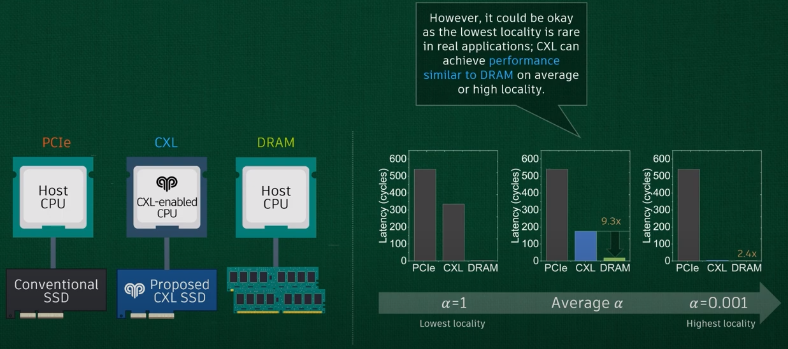
整体性能来说，package内的HBM性能最好，其次是近端的DRAM然后是远端DRAM，接下来是直连的type3，最后是经过switch的type3。
内存池化 by CXL
switch
第一步，上switch，CXL2.0 只支持一级switch，3.0支持多级。
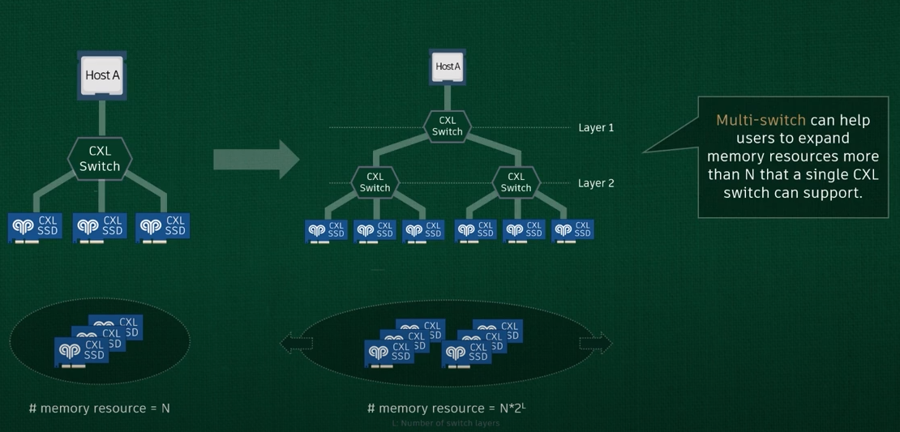
Pooling
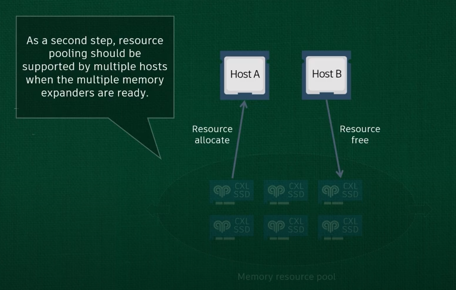
虚拟化
CXL Switch virtualization
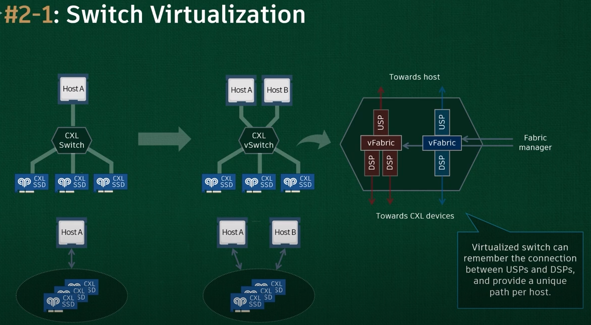
每个CXL SSD 还可以进一步虚拟化。类似SR-IOV中的PF VF。
一个SINGLE CXL SSD 可以被逻辑拆分为最多16个 logical device 从而支持Resource Pooling，即单一物理设备划分为多个逻辑设备MLD（Multiple Logical Device）
更加精细话颗粒度的管理。
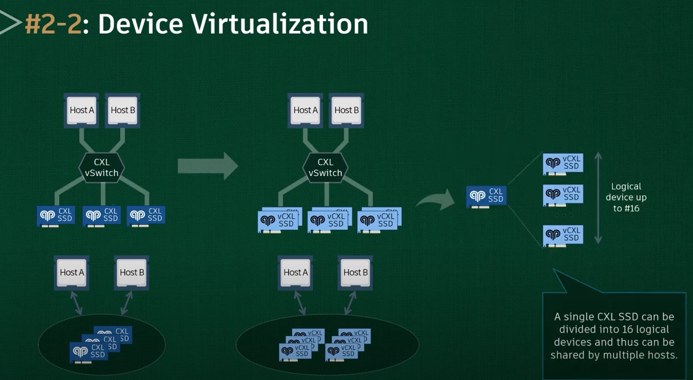
一点个人感受：
- 把复杂的东西能很好地给读者讲清楚，讲明白，图文并茂，很厉害；
- 把性能一般的东西，通过新技术，发挥出更好的性能，很厉害；